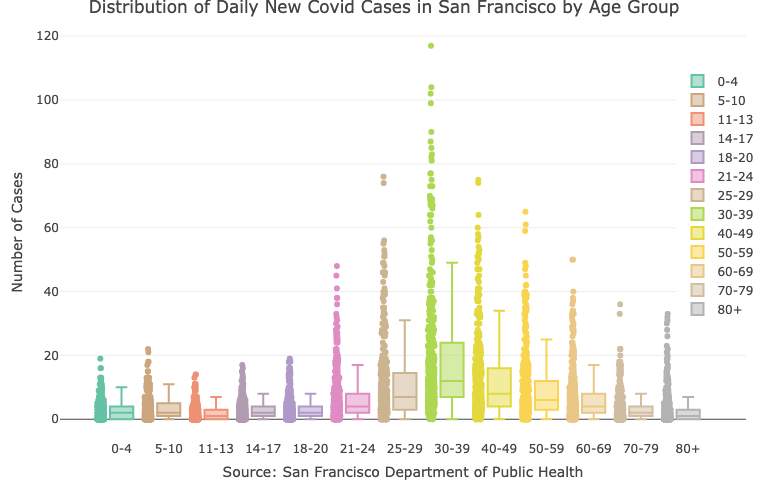
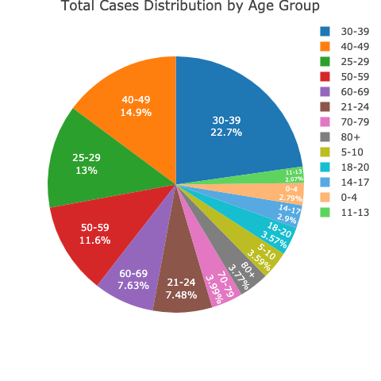
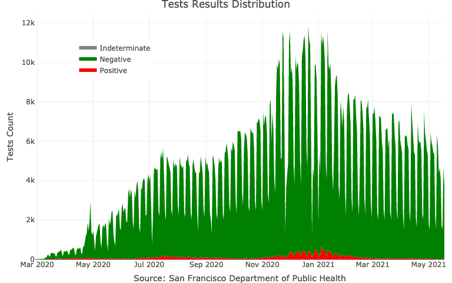
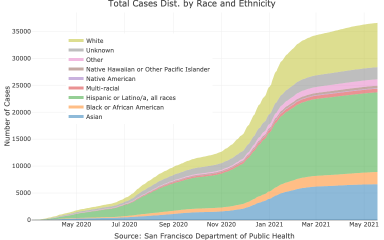

The covid19sf package provides a daily summary of the covid19 cases in San Francisco. The package includes the following datasets:
-
covid19sf_age- Cases summarized by age group -
covid19sf_demo- Cases summarized by date, transmission and case disposition -
covid19sf_gender- Confirmed cases summarized by gender -
covid19sf_geo- Confirmed cases and deaths summarized by geography -
covid19sf_homeless- Confirmed cases by homelessness -
covid19sf_hospital- Hospital capacity data -
covid19sf_hospitalizations- Hospitalizations data -
covid19sf_housing- Alternative housing sites -
covid19sf_summary- Cases summarized by date, transmission and case disposition -
covid19sf_test_loc- Testing locations -
covid19sf_tests- Daily number of tests
Data soucre: San Francisco, Department of Public Health - Population Health Division through the San Francisco Opne Data protal website
Installation
# install.packages("devtools") devtools::install_github("RamiKrispin/covid19sf")
Usage
The ccovid19sf package provides different views for the covid19 cases in San Francisco. That includes case distribution by age, gender, race, etc. The following examples demonstrate some of the data use cases.
Cases distribution by age
The covid19sf_age provides a daily summary of the cumulative positive cases by age group:
data(covid19sf_age) head(covid19sf_age) #> specimen_collection_date age_group new_confirmed_cases cumulative_confirmed_cases last_updated #> 1 2020-03-12 51-60 2 6 2020-10-16 14:15:02 #> 2 2020-03-13 51-60 3 9 2020-10-16 14:15:02 #> 3 2020-03-14 51-60 1 10 2020-10-16 14:15:02 #> 4 2020-03-15 51-60 0 10 2020-10-16 14:15:02 #> 5 2020-03-16 51-60 8 18 2020-10-16 14:15:02 #> 6 2020-03-17 51-60 3 21 2020-10-16 14:15:02
The following box-plot shows the distribution of the positive cases by age group:
library(plotly) covid19sf_age$age_group <- factor(covid19sf_age$age_group, levels = c("under 18", "18-30", "31-40", "41-50", "51-60", "61-70", "71-80","81+")) plot_ly(covid19sf_age, color = ~ age_group, y = ~ new_confirmed_cases, boxpoints = "all", jitter = 0.3, pointpos = -1.8, type = "box" ) %>% layout(title = "Case Dist. by Age Group", yaxis = list(title = "Number of Cases"), xaxis = list(title = "Source: San Francisco Department of Public Health"), legend = list(x = 0.9, y = 0.9))

Here is the overall distribution of cases by age group as of 2020-10-15:
library(dplyr) library(plotly) covid19sf_age %>% filter(specimen_collection_date == max(specimen_collection_date)) %>% plot_ly(values = ~ cumulative_confirmed_cases, labels = ~ age_group, type = "pie", textposition = 'inside', textinfo = 'label+percent', insidetextfont = list(color = '#FFFFFF'), hoverinfo = 'text', text = ~paste("Age Group:", age_group, "<br>", "Total:", cumulative_confirmed_cases)) %>% layout(title = "Total Cases Distribution by Age Group")

Tests results distribution
The covid19sf_tests provides a daily summary of the daily number of tests and their results (positive, negative, and indeterminate):
data(covid19sf_tests) head(covid19sf_tests) #> specimen_collection_date tests pos pct neg indeterminate last_updated #> 1 2020-02-28 2 0 0.00000000 2 0 2020-10-16 14:15:00 #> 2 2020-03-01 2 0 0.00000000 2 0 2020-10-16 14:15:00 #> 3 2020-03-02 2 0 0.00000000 2 0 2020-10-16 14:15:00 #> 4 2020-03-03 7 2 0.28571429 5 0 2020-10-16 14:15:00 #> 5 2020-03-04 11 0 0.00000000 11 0 2020-10-16 14:15:00 #> 6 2020-03-05 19 6 0.31578947 13 0 2020-10-16 14:15:00
The plot below shows the daily distribution of the results of the tests:
covid19sf_tests %>% plotly::plot_ly(x = ~ specimen_collection_date, y = ~ pos, name = "Positive", type = 'scatter', mode = 'none', stackgroup = 'one', fillcolor = "red") %>% plotly::add_trace(y = ~ neg, name = "Negative", fillcolor = "green") %>% plotly::add_trace(y = ~ indeterminate, name = "Indeterminate", fillcolor = "gray") %>% plotly::layout(title = "Tests Results Distribution", yaxis = list(title = "Tests Count"), xaxis = list(title = "Source: San Francisco Department of Public Health"), legend = list(x = 0.1, y = 0.9))

Cases distribution by race ethnicity
The covid19sf_demp dataset provides a daily summary of the covid19 positive cases by race and ethnicity:
data(covid19sf_demo) head(covid19sf_demo) #> specimen_collection_date race_ethnicity new_confirmed_cases cumulative_confirmed_cases last_updated #> 1 2020-04-20 Asian 4 208 2020-10-16 14:15:02 #> 2 2020-04-21 Asian 5 213 2020-10-16 14:15:02 #> 3 2020-06-04 Asian 5 361 2020-10-16 14:15:02 #> 4 2020-06-05 Asian 2 363 2020-10-16 14:15:02 #> 5 2020-06-06 Asian 1 364 2020-10-16 14:15:02 #> 6 2020-06-07 Asian 0 364 2020-10-16 14:15:02
Below is a plot of the cumulative positive cases by race and ethnicity:
covid19sf_demo %>% dplyr::arrange(specimen_collection_date) %>% plotly::plot_ly(x = ~ specimen_collection_date, y = ~ cumulative_confirmed_cases, # name = 'Cases', type = 'scatter', mode = 'none', color = ~race_ethnicity, stackgroup = 'one') %>% layout(title = "Total Cases Dist. by Race and Ethnicity", legend = list(x = 0.1, y = 0.9), yaxis = list(title = "Number of Cases", tickformat = ".0f"), xaxis = list(title = "Source: San Francisco Department of Public Health"))
